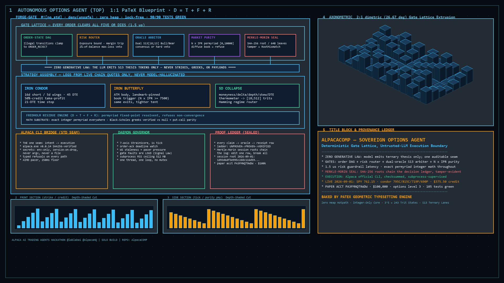

Deterministic
Execution Airlock
A model can propose a trade. The system only submits it after deterministic Rust gates approve the oracle verdict, market structure, leg geometry, and max-loss ceiling.

Autonomous Strain Circuit Breaker
A background loop tracking the physical derivatives of equity decay. If acceleration into a margin cliff breaches thresholds, the order gate locks instantly.
Unsafe trade refused
$2,525 > $2,000
The 29-wide condor trips the 2% max-loss veto and is clamped before Alpaca CLI is ever spawned.
Credit price is negative
The body test proves a $3.28 credit serializes as "-3.28". Debit prices are positive; credits are clamped negative.
No claim without proof
Every claim, UI wording, and feature maps directly to docs/CLAIM_PROOF_MAP.md, ledger rows, or code.
What controls a live order
1. Oracle Verdict
Unauthorized verdicts block execution immediately.
2. Purity Gate
Chaotic market structure is refused.
3. Geometry Gate
Malformed spread legs are blocked.
4. 2% Ceiling
Max-loss bound is the final risk clamp.
5. Alpaca Subprocess
mleg JSON is sent through stdin.
What we can safely say
| Feature Claim | Current Status | Proof / Receipt |
|---|---|---|
| Order-state DAG | Tested | order_dag.rs state machine tested; not live. |
| Wing cap pulls inside quoted legal strikes | Tested | wing_cap_pulls_delta_selected_wing_inside_cap |
| API pacer & Merkle seal | Support | Built as support modules, not claiming live path. |